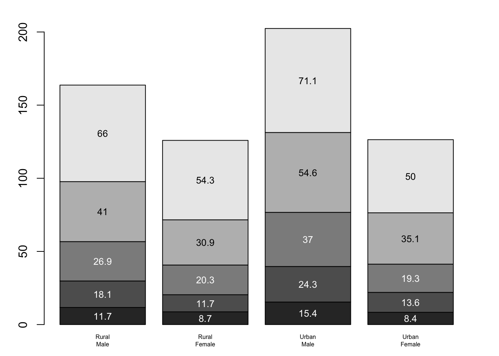
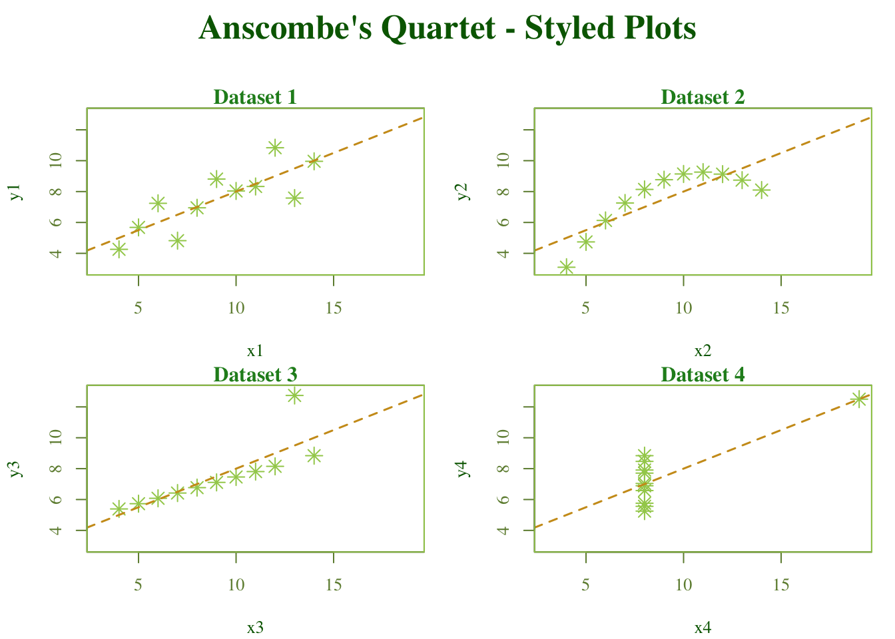

# Examples of standard high-level plots
# In each case, extra output is also added using low-level
# plotting functions.
#
# Setting the parameter (3 rows by 2 cols)
par(mfrow=c(3, 2))
# Scatterplot
# Note the incremental additions
x <- c(0.5, 2, 4, 8, 12, 16)
y1 <- c(1, 1.3, 1.9, 3.4, 3.9, 4.8)
y2 <- c(4, .8, .5, .45, .4, .3)
# Setting label orientation, margins c(bottom, left, top, right) & text size
par(las=1, mar=c(4, 4, 2, 4), cex=.7)
plot.new()
plot.window(range(x), c(0, 6))
lines(x, y1)
lines(x, y2)
points(x, y1, pch=16, cex=2) # Try different cex value?
points(x, y2, pch=21, bg="white", cex=2) # Different background color
par(col="gray50", fg="gray50", col.axis="gray50")
axis(1, at=seq(0, 16, 4)) # What is the first number standing for?
axis(2, at=seq(0, 6, 2))
axis(4, at=seq(0, 6, 2))
box(bty="u")
mtext("Travel Time (s)", side=1, line=2, cex=0.8)
mtext("Responses per Travel", side=2, line=2, las=0, cex=0.8)
mtext("Responses per Second", side=4, line=2, las=0, cex=0.8)
text(4, 5, "Bird 131")
par(mar=c(5.1, 4.1, 4.1, 2.1), col="black", fg="black", col.axis="black")
# Histogram
# Random data
Y <- rnorm(50)
# Make sure no Y exceed [-3.5, 3.5]
Y[Y < -3.5 | Y > 3.5] <- NA # Selection/set range
x <- seq(-3.5, 3.5, .1)
dn <- dnorm(x)
par(mar=c(4.5, 4.1, 3.1, 0))
hist(Y, breaks=seq(-3.5, 3.5), ylim=c(0, 0.5),
col="gray80", freq=FALSE)
lines(x, dnorm(x), lwd=2)
par(mar=c(5.1, 4.1, 4.1, 2.1))
# Barplot
par(mar=c(2, 3.1, 2, 2.1))
midpts <- barplot(VADeaths,
col=gray(0.1 + seq(1, 9, 2)/11),
names=rep("", 4))
mtext(sub(" ", "\n", colnames(VADeaths)),
at=midpts, side=1, line=0.5, cex=0.5)
text(rep(midpts, each=5), apply(VADeaths, 2, cumsum) - VADeaths/2,
VADeaths,
col=rep(c("white", "black"), times=3:2),
cex=0.8)
par(mar=c(5.1, 4.1, 4.1, 2.1))
# Boxplot
par(mar=c(3, 4.1, 2, 0))
boxplot(len ~ dose, data = ToothGrowth,
boxwex = 0.25, at = 1:3 - 0.2,
subset= supp == "VC", col="white",
xlab="",
ylab="tooth length", ylim=c(0,35))
mtext("Vitamin C dose (mg)", side=1, line=2.5, cex=0.8)
boxplot(len ~ dose, data = ToothGrowth, add = TRUE,
boxwex = 0.25, at = 1:3 + 0.2,
subset= supp == "OJ")
legend(1.5, 9, c("Ascorbic acid", "Orange juice"),
fill = c("white", "gray"),
bty="n")
par(mar=c(5.1, 4.1, 4.1, 2.1))
# Persp
x <- seq(-10, 10, length= 30)
y <- x
f <- function(x,y) { r <- sqrt(x^2+y^2); 10 * sin(r)/r }
z <- outer(x, y, f)
z[is.na(z)] <- 1
# 0.5 to include z axis label
par(mar=c(0, 0.5, 0, 0), lwd=0.5)
persp(x, y, z, theta = 30, phi = 30,
expand = 0.5)
par(mar=c(5.1, 4.1, 4.1, 2.1), lwd=1)
# Piechart
par(mar=c(0, 2, 1, 2), xpd=FALSE, cex=0.5)
pie.sales <- c(0.12, 0.3, 0.26, 0.16, 0.04, 0.12)
names(pie.sales) <- c("Blueberry", "Cherry",
"Apple", "Boston Cream", "Other", "Vanilla")
pie(pie.sales, col = gray(seq(0.3,1.0,length=6))) Assignment 03
1 Rerun murrell01.R
1.1 Choose one of the six charts and explain how it is configured by adding documentation to the codes.
# === Barplot Example with VADeaths dataset ===
# Adjust the margins of the plotting region.
# Arguments to par(mar=) are c(bottom, left, top, right).
# Here, margins are set smaller than default to fit the barplot labels nicely.
par(mar = c(2, 3.1, 2, 2.1))
# Draw the barplot for the VADeaths dataset.
# - 'VADeaths' is a built-in R matrix containing mortality rates in Virginia.
# - 'col' sets the bar colors to a sequence of grays (darker for higher values).
# - 'names=rep("", 4)' removes default axis labels for the 4 groups.
# - The function returns midpoints (x-coordinates) of each group of bars,
# which are stored in 'midpts' for later use in labeling.
midpts <- barplot(
VADeaths,
col = gray(0.1 + seq(1, 9, 2) / 11), # generate grayscale shading
names = rep("", 4) # suppress x-axis names
)
# Add custom group labels below the bars.
# - mtext() places text in the margins of the plot.
# - sub(" ", "\n", colnames(VADeaths)) replaces spaces with line breaks
# in the column names, so labels like "Rural Male" become:
# "Rural\nMale" (two lines).
# - 'at=midpts' places each label under the correct bar group.
# - 'side=1' means place text on the x-axis side (bottom).
# - 'line=0.5' controls how far below the axis the text is placed.
# - 'cex=0.5' makes the text half the default size.
mtext(
sub(" ", "\n", colnames(VADeaths)),
at = midpts, side = 1, line = 0.5, cex = 0.5
)
# Add numerical values inside the bars.
# - 'rep(midpts, each=5)' gives the x-positions for each of the 5 stacked bars
# within each group (since VADeaths has 5 rows).
# - 'apply(VADeaths, 2, cumsum)' computes cumulative sums for each column,
# giving the top edge of each stacked bar.
# - Subtract 'VADeaths/2' to center the labels vertically within each bar.
# - 'VADeaths' provides the actual numbers to display as labels.
# - 'col=rep(c("white","black"), times=3:2)' alternates text color (white/black)
# depending on bar shading, so text is visible against background.
# - 'cex=0.8' scales the text smaller than default.
text(
rep(midpts, each = 5),
apply(VADeaths, 2, cumsum) - VADeaths / 2,
VADeaths,
col = rep(c("white", "black"), times = 3:2),
cex = 0.8
)
# Reset margins to default (bottom=5.1, left=4.1, top=4.1, right=2.1).
# Always good practice so later plots don’t inherit modified margins.
par(mar = c(5.1, 4.1, 4.1, 2.1))2 Rerun anscombe01.R (in Teams folder)
## Data Visualization
## Objective: Identify data or model problems using visualization
## Anscombe (1973) Quartlet
data(anscombe) # Load Anscombe's data
View(anscombe) # View the data
summary(anscombe) x1 x2 x3 x4 y1
Min. : 4.0 Min. : 4.0 Min. : 4.0 Min. : 8 Min. : 4.260
1st Qu.: 6.5 1st Qu.: 6.5 1st Qu.: 6.5 1st Qu.: 8 1st Qu.: 6.315
Median : 9.0 Median : 9.0 Median : 9.0 Median : 8 Median : 7.580
Mean : 9.0 Mean : 9.0 Mean : 9.0 Mean : 9 Mean : 7.501
3rd Qu.:11.5 3rd Qu.:11.5 3rd Qu.:11.5 3rd Qu.: 8 3rd Qu.: 8.570
Max. :14.0 Max. :14.0 Max. :14.0 Max. :19 Max. :10.840
y2 y3 y4
Min. :3.100 Min. : 5.39 Min. : 5.250
1st Qu.:6.695 1st Qu.: 6.25 1st Qu.: 6.170
Median :8.140 Median : 7.11 Median : 7.040
Mean :7.501 Mean : 7.50 Mean : 7.501
3rd Qu.:8.950 3rd Qu.: 7.98 3rd Qu.: 8.190
Max. :9.260 Max. :12.74 Max. :12.500 ## Simple version
plot(anscombe$x1,anscombe$y1)
summary(anscombe) x1 x2 x3 x4 y1
Min. : 4.0 Min. : 4.0 Min. : 4.0 Min. : 8 Min. : 4.260
1st Qu.: 6.5 1st Qu.: 6.5 1st Qu.: 6.5 1st Qu.: 8 1st Qu.: 6.315
Median : 9.0 Median : 9.0 Median : 9.0 Median : 8 Median : 7.580
Mean : 9.0 Mean : 9.0 Mean : 9.0 Mean : 9 Mean : 7.501
3rd Qu.:11.5 3rd Qu.:11.5 3rd Qu.:11.5 3rd Qu.: 8 3rd Qu.: 8.570
Max. :14.0 Max. :14.0 Max. :14.0 Max. :19 Max. :10.840
y2 y3 y4
Min. :3.100 Min. : 5.39 Min. : 5.250
1st Qu.:6.695 1st Qu.: 6.25 1st Qu.: 6.170
Median :8.140 Median : 7.11 Median : 7.040
Mean :7.501 Mean : 7.50 Mean : 7.501
3rd Qu.:8.950 3rd Qu.: 7.98 3rd Qu.: 8.190
Max. :9.260 Max. :12.74 Max. :12.500 # Create four model objects
lm1 <- lm(y1 ~ x1, data=anscombe)
summary(lm1)
Call:
lm(formula = y1 ~ x1, data = anscombe)
Residuals:
Min 1Q Median 3Q Max
-1.92127 -0.45577 -0.04136 0.70941 1.83882
Coefficients:
Estimate Std. Error t value Pr(>|t|)
(Intercept) 3.0001 1.1247 2.667 0.02573 *
x1 0.5001 0.1179 4.241 0.00217 **
---
Signif. codes: 0 '***' 0.001 '**' 0.01 '*' 0.05 '.' 0.1 ' ' 1
Residual standard error: 1.237 on 9 degrees of freedom
Multiple R-squared: 0.6665, Adjusted R-squared: 0.6295
F-statistic: 17.99 on 1 and 9 DF, p-value: 0.00217lm2 <- lm(y2 ~ x2, data=anscombe)
summary(lm2)
Call:
lm(formula = y2 ~ x2, data = anscombe)
Residuals:
Min 1Q Median 3Q Max
-1.9009 -0.7609 0.1291 0.9491 1.2691
Coefficients:
Estimate Std. Error t value Pr(>|t|)
(Intercept) 3.001 1.125 2.667 0.02576 *
x2 0.500 0.118 4.239 0.00218 **
---
Signif. codes: 0 '***' 0.001 '**' 0.01 '*' 0.05 '.' 0.1 ' ' 1
Residual standard error: 1.237 on 9 degrees of freedom
Multiple R-squared: 0.6662, Adjusted R-squared: 0.6292
F-statistic: 17.97 on 1 and 9 DF, p-value: 0.002179lm3 <- lm(y3 ~ x3, data=anscombe)
summary(lm3)
Call:
lm(formula = y3 ~ x3, data = anscombe)
Residuals:
Min 1Q Median 3Q Max
-1.1586 -0.6146 -0.2303 0.1540 3.2411
Coefficients:
Estimate Std. Error t value Pr(>|t|)
(Intercept) 3.0025 1.1245 2.670 0.02562 *
x3 0.4997 0.1179 4.239 0.00218 **
---
Signif. codes: 0 '***' 0.001 '**' 0.01 '*' 0.05 '.' 0.1 ' ' 1
Residual standard error: 1.236 on 9 degrees of freedom
Multiple R-squared: 0.6663, Adjusted R-squared: 0.6292
F-statistic: 17.97 on 1 and 9 DF, p-value: 0.002176lm4 <- lm(y4 ~ x4, data=anscombe)
summary(lm4)
Call:
lm(formula = y4 ~ x4, data = anscombe)
Residuals:
Min 1Q Median 3Q Max
-1.751 -0.831 0.000 0.809 1.839
Coefficients:
Estimate Std. Error t value Pr(>|t|)
(Intercept) 3.0017 1.1239 2.671 0.02559 *
x4 0.4999 0.1178 4.243 0.00216 **
---
Signif. codes: 0 '***' 0.001 '**' 0.01 '*' 0.05 '.' 0.1 ' ' 1
Residual standard error: 1.236 on 9 degrees of freedom
Multiple R-squared: 0.6667, Adjusted R-squared: 0.6297
F-statistic: 18 on 1 and 9 DF, p-value: 0.002165plot(anscombe$x1,anscombe$y1)
abline(coefficients(lm1))
plot(anscombe$x2,anscombe$y2)
abline(coefficients(lm2))
plot(anscombe$x3,anscombe$y3)
abline(coefficients(lm3))plot(anscombe$x4,anscombe$y4)
abline(coefficients(lm4))
## Fancy version (per help file)
ff <- y ~ x
mods <- setNames(as.list(1:4), paste0("lm", 1:4))
# Plot using for loop
for(i in 1:4) {
ff[2:3] <- lapply(paste0(c("y","x"), i), as.name)
## or ff[[2]] <- as.name(paste0("y", i))
## ff[[3]] <- as.name(paste0("x", i))
mods[[i]] <- lmi <- lm(ff, data = anscombe)
print(anova(lmi))
}Analysis of Variance Table
Response: y1
Df Sum Sq Mean Sq F value Pr(>F)
x1 1 27.510 27.5100 17.99 0.00217 **
Residuals 9 13.763 1.5292
---
Signif. codes: 0 '***' 0.001 '**' 0.01 '*' 0.05 '.' 0.1 ' ' 1
Analysis of Variance Table
Response: y2
Df Sum Sq Mean Sq F value Pr(>F)
x2 1 27.500 27.5000 17.966 0.002179 **
Residuals 9 13.776 1.5307
---
Signif. codes: 0 '***' 0.001 '**' 0.01 '*' 0.05 '.' 0.1 ' ' 1
Analysis of Variance Table
Response: y3
Df Sum Sq Mean Sq F value Pr(>F)
x3 1 27.470 27.4700 17.972 0.002176 **
Residuals 9 13.756 1.5285
---
Signif. codes: 0 '***' 0.001 '**' 0.01 '*' 0.05 '.' 0.1 ' ' 1
Analysis of Variance Table
Response: y4
Df Sum Sq Mean Sq F value Pr(>F)
x4 1 27.490 27.4900 18.003 0.002165 **
Residuals 9 13.742 1.5269
---
Signif. codes: 0 '***' 0.001 '**' 0.01 '*' 0.05 '.' 0.1 ' ' 1sapply(mods, coef) # Note the use of this function lm1 lm2 lm3 lm4
(Intercept) 3.0000909 3.000909 3.0024545 3.0017273
x1 0.5000909 0.500000 0.4997273 0.4999091lapply(mods, function(fm) coef(summary(fm)))$lm1
Estimate Std. Error t value Pr(>|t|)
(Intercept) 3.0000909 1.1247468 2.667348 0.025734051
x1 0.5000909 0.1179055 4.241455 0.002169629
$lm2
Estimate Std. Error t value Pr(>|t|)
(Intercept) 3.000909 1.1253024 2.666758 0.025758941
x2 0.500000 0.1179637 4.238590 0.002178816
$lm3
Estimate Std. Error t value Pr(>|t|)
(Intercept) 3.0024545 1.1244812 2.670080 0.025619109
x3 0.4997273 0.1178777 4.239372 0.002176305
$lm4
Estimate Std. Error t value Pr(>|t|)
(Intercept) 3.0017273 1.1239211 2.670763 0.025590425
x4 0.4999091 0.1178189 4.243028 0.002164602# Preparing for the plots
op <- par(mfrow = c(2, 2), mar = 0.1+c(4,4,1,1), oma = c(0, 0, 2, 0))
# Plot charts using for loop
for(i in 1:4) {
ff[2:3] <- lapply(paste0(c("y","x"), i), as.name)
plot(ff, data = anscombe, col = "red", pch = 21, bg = "orange", cex = 1.2,
xlim = c(3, 19), ylim = c(3, 13))
abline(mods[[i]], col = "blue")
}
mtext("Anscombe's 4 Regression data sets", outer = TRUE, cex = 1.5)
par(op)2.1 Compare the regression models
| Dataset | Regression Equation (ŷ) | Correlation (r) | R² | Mean(x) | Var(x) | Mean(y) | Var(y) |
|---|---|---|---|---|---|---|---|
| I | ŷ = 3.0 + 0.50x | 0.816 | 0.67 | 9.0 | 11.0 | 7.5 | 4.127 |
| II | ŷ = 3.0 + 0.50x | 0.816 | 0.67 | 9.0 | 11.0 | 7.5 | 4.127 |
| III | ŷ = 3.0 + 0.50x | 0.816 | 0.67 | 9.0 | 11.0 | 7.5 | 4.127 |
| IV | ŷ = 3.0 + 0.50x | 0.816 | 0.67 | 9.0 | 11.0 | 7.5 | 4.127 |
| Dataset | Notes from Plot |
|---|---|
| I | A classical linear relationship. The points fall close to the regression line with moderate scatter; regression analysis is appropriate here. |
| II | The data follow a curved, but nonlinear relationship. A regression line misrepresents the pattern. This set highlights how correlation can mask nonlinear structure. |
| III | Most points are flat with no clear trend, except for one high-leverage outlier. That single point forces the slope, giving a misleading regression fit. An example of outlier influence. |
| IV | Nearly all points align vertically at x = 8. A single extreme outlier creates the correlation and slope. Shows how one influential point can dominate results. |
Despite identical summary statistics (same means, variances, regression line, correlation, and R^2), the visual story is completely different. Anscombe designed these datasets to remind us that “look at the data” is as important as statistical summaries.
2.2 Compare different ways to create the plots (e.g. changing colors, line types, plot characters)
## Anscombe's Quartet Comparative Plots
data(anscombe)
# Set up regression models
mods <- setNames(vector("list", 4), paste0("lm", 1:4))
ff <- y ~ x
for (i in 1:4) {
ff[2:3] <- lapply(paste0(c("y","x"), i), as.name)
mods[[i]] <- lm(ff, data = anscombe)
}
# === Comparative Plotting Styles ===
# Now line color (linecol) is independent of point color (col)
styles <- list(
list(col="red", pch=16, bg="pink", cex=3.0, lty=1, lwd=0.5, linecol="black"),
list(col="blue", pch=17, bg="lightblue", cex=1.4, lty=2, lwd=2, linecol="darkorange"),
list(col="darkgreen", pch=15, bg="lightgreen", cex=1.6, lty=3, lwd=3, linecol="brown"),
list(col="purple",pch=18, bg="lavender", cex=1.8, lty=4, lwd=10, linecol="darkgray")
)
# Plot grid
op <- par(mfrow=c(2,2), mar=0.1+c(4,4,1,1), oma=c(0,0,2,0))
for(i in 1:4) {
ff[2:3] <- lapply(paste0(c("y","x"), i), as.name)
style <- styles[[i]]
plot(ff, data=anscombe,
col=style$col, pch=style$pch, bg=style$bg, cex=style$cex,
xlim=c(3,19), ylim=c(3,13),
main=paste("Dataset", i))
abline(mods[[i]], col=style$linecol, lty=style$lty, lwd=style$lwd)
}
mtext("Anscombe's Quartet - Style Options", outer=TRUE, cex=1.5)par(op)3 Finetune
Can you finetune the charts without using other packages (consult RGraphics by Murrell)?
- Use a serif font
- Try non-default colors
- Use own plotting character
## Anscombe's Quartet - Cohesive Styled Version
data(anscombe)
# Build regression models
mods <- setNames(vector("list", 4), paste0("lm", 1:4))
ff <- y ~ x
for (i in 1:4) {
ff[2:3] <- lapply(paste0(c("y","x"), i), as.name)
mods[[i]] <- lm(ff, data=anscombe)
}
# === Global Style Settings ===
op <- par(mfrow=c(2,2), mar=0.1+c(4,4,1,1), oma=c(0,0,4,0),
family="serif",
col.axis="darkolivegreen4", # axis tick labels
col.lab="darkgreen", # axis titles
col.main="forestgreen") # plot titles
pch_col <- "darkolivegreen3" # points (soft green)
line_col <- "goldenrod3" # regression lines (contrasting gold)
pch_shape <- 8 # star symbol
# Plot loop
for(i in 1:4) {
ff[2:3] <- lapply(paste0(c("y","x"), i), as.name)
# suppress default axes
plot(ff, data=anscombe,
col=pch_col, pch=pch_shape, cex=1.5,
xlim=c(3,19), ylim=c(3,13),
main=paste("Dataset", i),
xaxt="n", yaxt="n")
# regression line
abline(mods[[i]], col=line_col, lty=2, lwd=1.5)
# redraw axes with colored ticks + labels
axis(1, col.axis="darkolivegreen4", col.ticks="darkolivegreen4")
axis(2, col.axis="darkolivegreen4", col.ticks="darkolivegreen4")
# custom frame color
box(col="darkolivegreen3", lwd=1)
}
# Add global title
mtext("Anscombe's Quartet - Styled Plots",
outer=TRUE, cex=1.6, font=2, col="darkgreen", line=2)
# Reset par
par(op)4 How about with ggplot2? (use tidyverse package)
library(ggplot2)
library(dplyr)
library(tidyr)
library(broom) # for tidy() regression output
# Reshape Anscombe into long format
anscombe_long <- anscombe %>%
pivot_longer(cols = everything(),
names_to = c(".value", "set"),
names_pattern = "(.)(.)") %>%
mutate(set = as.integer(set))
# Fit regression models and extract slopes/intercepts
coefs <- anscombe_long %>%
group_by(set) %>%
do(tidy(lm(y ~ x, data = .))) %>%
select(set, term, estimate) %>%
pivot_wider(names_from = term, values_from = estimate) %>%
rename(intercept = `(Intercept)`, slope = x)
# Generate regression line data for plotting
lines <- anscombe_long %>%
group_by(set) %>%
summarise(x = seq(min(x), max(x), length.out=100), .groups="drop") %>%
left_join(coefs, by="set") %>%
mutate(y = intercept + slope * x)
# === Styled ggplot2 version with axis labels ===
ggplot(anscombe_long, aes(x=x, y=y)) +
geom_point(shape=8, size=3, color="darkolivegreen3") + # star points
geom_line(data=lines, aes(x=x, y=y),
color="goldenrod3", linetype="dashed", linewidth=1) +
facet_wrap(~set, ncol=2, labeller = labeller(set = function(i) paste("Dataset", i))) +
theme_minimal(base_family="serif") +
theme(
plot.title = element_text(color="darkgreen", face="bold", size=16, hjust=0.5),
axis.title = element_text(color="darkgreen", face="bold"),
axis.text = element_text(color="darkolivegreen4"),
axis.ticks = element_line(color="darkolivegreen4"),
panel.border = element_rect(color="darkolivegreen3", fill=NA, linewidth=0.8),
strip.text = element_text(color="forestgreen", face="bold", size=12)
) +
labs(
title="Anscombe's Quartet - Styled ggplot2 Plots",
x="X values",
y="Y values"
)5 Pre-hackathon by team:
5.1 Team work: Replicate the Scatterplot matrix below (hint: Acquire data using the following codes)
library(dplyr)
library(ggplot2)
library(ggrepel)
# --- Load OWID data ---
owidall <- read.csv("https://catalog.ourworldindata.org/garden/covid/latest/compact/compact.csv")
# --- Filter to Europe (remove OWID aggregates) ---
owideu <- owidall %>%
filter(!grepl("^OWID", code), continent == "Europe") %>%
mutate(date = as.Date(date)) %>%
filter(!is.na(new_deaths_smoothed))
# --- Select the single peak per country ---
label_countries <- c("Spain", "Germany", "Ukraine", "Italy")
label_points <- owideu %>%
filter(country %in% label_countries) %>%
group_by(country) %>%
slice_max(order_by = new_deaths_smoothed, n = 1, with_ties = FALSE) %>%
ungroup()
# --- Plot ---
ggplot(owideu, aes(x = date, y = new_deaths)) +
geom_point(shape = 16, size = 1.2, alpha = 0.7, color = "#e91e63") +
geom_text_repel(
data = label_points,
aes(label = country),
size = 3,
family = "serif",
color = "black",
box.padding = 0.2,
point.padding = 0.15,
min.segment.length = 0
) +
scale_x_date(date_breaks = "4 months", date_labels = "%Y-%m") +
labs(x = "Date", y = "COVID Deaths in Europe (Daily)") +
theme_classic(base_family = "serif") +
theme(
axis.text.x = element_text(angle = 60, hjust = 1, size = 9),
axis.text.y = element_text(angle = 90, vjust = 0.5, size = 9),
axis.title = element_text(size = 14),
legend.position = "none"
)# Send the codes to the TA. The first team delivering the code and chart will win a prize (by time stamp and product)
# Download COVID data from OWID GitHub
owidall = read.csv("https://github.com/owid/covid-19-data/blob/master/public/data/owid-covid-data.csv?raw=true")
# Deselect cases/rows with OWID
owidall = owidall[!grepl("^OWID", owidall$iso_code), ]
# Subset by continent: Europe
owideu = subset(owidall, continent=="Europe")6 Notes
Certain elements of this preparation were enhanced with an LLM including code restructuring, commenting, and information layout.